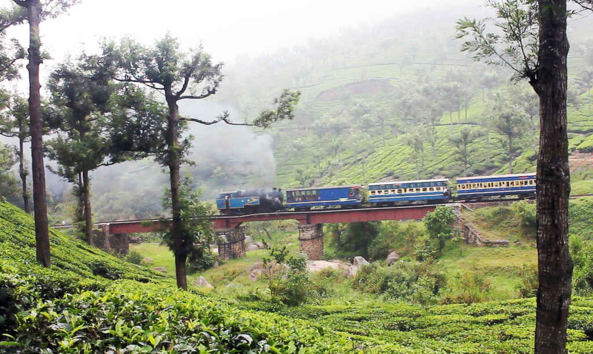

For many travelers, ooty is South India's most serenely beautiful state. This slender coastal strip is defined by its layered landscape: almost 373 miles (600km) of glorious Arabian Sea coast and beaches; a languid network of glistening backwaters; and the spice- and tea-covered hills of the Western Ghats, dotted with fiercely protected wildlife reserves and cool hill stations such as Munnar. Just setting foot on this swathe of soul-soothing, palm-shaded green will slow your subcontinental stride to a blissed-out amble. Kerala is a world away from the hectic action of the rest of India, its long, fascinating backstory illuminated by historically evocative cities like Kochi (Cochin) and Thiruvananthapuram (Trivandrum).
click to get info about the hotels in ooty